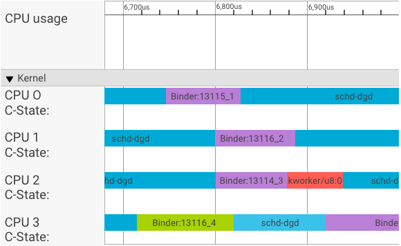
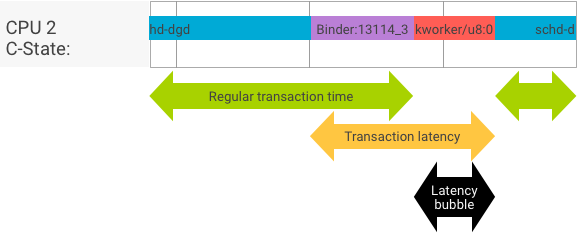

Android 8.0 includes binder and hwbinder performance tests for throughput and latency. While many scenarios exist for detecting perceptible performance problems, running such scenarios can be time consuming and results are often unavailable until after a system is integrated. Using the provided performance tests makes it easier to test during development, detect serious problems earlier, and improve user experience.
Performance tests include the following four categories:
- binder throughput (available in
system/libhwbinder/vts/performance/Benchmark_binder.cpp) - binder latency (available in
frameworks/native/libs/binder/tests/schd-dbg.cpp) - hwbinder throughput (available in
system/libhwbinder/vts/performance/Benchmark.cpp) - hwbinder latency (available in
system/libhwbinder/vts/performance/Latency.cpp)
About binder and hwbinder
Binder and hwbinder are Android inter-process communication (IPC) infrastructures that share the same Linux driver but have the following qualitative differences:
| Aspect | binder | hwbinder |
|---|---|---|
| Purpose | Provide a general purpose IPC scheme for framework | Communicate with hardware |
| Property | Optimized for Android framework usage | Minimum overhead low latency |
| Change scheduling policy for foreground/background | Yes | No |
| Arguments passing | Uses serialization supported by Parcel object | Uses scatter buffers and avoids the overhead to copy data required for Parcel serialization |
| Priority inheritance | No | Yes |
Binder and hwbinder processes
A systrace visualizer displays transactions as follows:
In the above example:
- The four (4) schd-dbg processes are client processes.
- The four (4) binder processes are server processes (name starts with Binder and ends with a sequence number).
- A client process is always paired with a server process, which is dedicated to its client.
- All the client-server process pairs are scheduled independently by kernel concurrently.
In CPU 1, the OS kernel executes the client to issue the request. It then uses the same CPU whenever possible to wake up a server process, handle the request, and context switch back after the request is complete.
Throughput vs. latency
In a perfect transaction, where the client and server process switch seamlessly, throughput and latency tests do not produce substantially different messages. However, when the OS kernel is handling an interrupt request (IRQ) from hardware, waiting for locks, or simply choosing not to handle a message immediately, a latency bubble can form.
The throughput test generates a large number of transactions with different payload sizes, providing a good estimation for the regular transaction time (in best case scenarios) and the maximum throughput the binder can achieve.
In contrast, the latency test performs no actions on the payload to minimize the regular transaction time. We can use transaction time to estimate the binder overhead, make statistics for the worst case, and calculate the ratio of transactions whose latency meets a specified deadline.
Handling priority inversions
A priority inversion occurs when a thread with higher priority is logically waiting for a thread with lower priority. Real-time (RT) applications have a priority inversion problem:
When using Linux Completely Fair Scheduler (CFS) scheduling, a thread always has a chance to run even when other threads have a higher priority. As a result, applications with CFS scheduling handle priority inversion as expected behavior and not as a problem. In cases where the Android framework needs RT scheduling to guarantee the privilege of high priority threads however, priority inversion must be resolved.
Example priority inversion during a binder transaction (RT thread is logically blocked by other CFS threads when waiting for a binder thread to service):
To avoid blockages, you can use priority inheritance to temporarily escalate the Binder thread to a RT thread when it services a request from a RT client. Keep in mind that RT scheduling has limited resources and should be used carefully. In a system with n CPUs, the maximum number of current RT threads is also n; additional RT threads might need to wait (and thus miss their deadlines) if all CPUs are taken by other RT threads.
To resolve all possible priority inversions, you could use priority inheritance for both binder and hwbinder. However, as binder is widely used across the system, enabling priority inheritance for binder transactions might spam the system with more RT threads than it can service.
Running throughput tests
The throughput test is run against binder/hwbinder transaction throughput. In a system that is not overloaded, latency bubbles are rare and their impact can be eliminated as long as the number of iterations is high enough.
- The binder throughput test is in
system/libhwbinder/vts/performance/Benchmark_binder.cpp. - The hwbinder throughput test is in
system/libhwbinder/vts/performance/Benchmark.cpp.
Test results
Example throughput test results for transactions using different payload sizes:
Benchmark Time CPU Iterations --------------------------------------------------------------------- BM_sendVec_binderize/4 70302 ns 32820 ns 21054 BM_sendVec_binderize/8 69974 ns 32700 ns 21296 BM_sendVec_binderize/16 70079 ns 32750 ns 21365 BM_sendVec_binderize/32 69907 ns 32686 ns 21310 BM_sendVec_binderize/64 70338 ns 32810 ns 21398 BM_sendVec_binderize/128 70012 ns 32768 ns 21377 BM_sendVec_binderize/256 69836 ns 32740 ns 21329 BM_sendVec_binderize/512 69986 ns 32830 ns 21296 BM_sendVec_binderize/1024 69714 ns 32757 ns 21319 BM_sendVec_binderize/2k 75002 ns 34520 ns 20305 BM_sendVec_binderize/4k 81955 ns 39116 ns 17895 BM_sendVec_binderize/8k 95316 ns 45710 ns 15350 BM_sendVec_binderize/16k 112751 ns 54417 ns 12679 BM_sendVec_binderize/32k 146642 ns 71339 ns 9901 BM_sendVec_binderize/64k 214796 ns 104665 ns 6495
- Time indicates the round trip delay measured in real time.
- CPU indicates the accumulated time when CPUs are scheduled for the test.
- Iterations indicates the number of times the test function executed.
For example, for an 8-byte payload:
BM_sendVec_binderize/8 69974 ns 32700 ns 21296
… the maximum throughput the binder can achieve is calculated as:
MAX throughput with 8-byte payload = (8 * 21296)/69974 ~= 2.423 b/ns ~= 2.268 Gb/s
Test options
To get results in .json, run the test with the
--benchmark_format=json argument:
libhwbinder_benchmark --benchmark_format=json
{
"context": {
"date": "2017-05-17 08:32:47",
"num_cpus": 4,
"mhz_per_cpu": 19,
"cpu_scaling_enabled": true,
"library_build_type": "release"
},
"benchmarks": [
{
"name": "BM_sendVec_binderize/4",
"iterations": 32342,
"real_time": 47809,
"cpu_time": 21906,
"time_unit": "ns"
},
….
}
Running latency tests
The latency test measures the time it takes for the client to begin initializing the transaction, switch to the server process for handling, and receive the result. The test also looks for known bad scheduler behaviors that can negatively impact transaction latency, such as a scheduler that does not support priority inheritance or honor the sync flag.
- The binder latency test is in
frameworks/native/libs/binder/tests/schd-dbg.cpp. - The hwbinder latency test is in
system/libhwbinder/vts/performance/Latency.cpp.
Test results
Results (in .json) show statistics for average/best/worst latency and the number of deadlines missed.
Test options
Latency tests take the following options:
| Command | Description |
|---|---|
-i value |
Specify number of iterations. |
-pair value |
Specify the number of process pairs. |
-deadline_us 2500 |
Specify the deadline in us. |
-v |
Get verbose (debugging) output. |
-trace |
Halt the trace on a deadline hit. |
The following sections detail each option, describe usage, and provide example results.
Specifying iterations
Example with a large number of iterations and verbose output disabled:
libhwbinder_latency -i 5000 -pair 3
{
"cfg":{"pair":3,"iterations":5000,"deadline_us":2500},
"P0":{"SYNC":"GOOD","S":9352,"I":10000,"R":0.9352,
"other_ms":{ "avg":0.2 , "wst":2.8 , "bst":0.053, "miss":2, "meetR":0.9996},
"fifo_ms": { "avg":0.16, "wst":1.5 , "bst":0.067, "miss":0, "meetR":1}
},
"P1":{"SYNC":"GOOD","S":9334,"I":10000,"R":0.9334,
"other_ms":{ "avg":0.19, "wst":2.9 , "bst":0.055, "miss":2, "meetR":0.9996},
"fifo_ms": { "avg":0.16, "wst":3.1 , "bst":0.066, "miss":1, "meetR":0.9998}
},
"P2":{"SYNC":"GOOD","S":9369,"I":10000,"R":0.9369,
"other_ms":{ "avg":0.19, "wst":4.8 , "bst":0.055, "miss":6, "meetR":0.9988},
"fifo_ms": { "avg":0.15, "wst":1.8 , "bst":0.067, "miss":0, "meetR":1}
},
"inheritance": "PASS"
}
These test results show the following:
"pair":3- Creates one client and server pair.
"iterations": 5000- Includes 5000 iterations.
"deadline_us":2500- Deadline is 2500us (2.5ms); most transactions are expected to meet this value.
"I": 10000- A single test iteration includes two (2) transactions:
- One transaction by normal priority (
CFS other) - One transaction by real time priority (
RT-fifo)
- One transaction by normal priority (
"S": 9352- 9352 of the transactions are synced in the same CPU.
"R": 0.9352- Indicates the ratio at which the client and server are synced together in the same CPU.
"other_ms":{ "avg":0.2 , "wst":2.8 , "bst":0.053, "miss":2, "meetR":0.9996}- The average (
avg), worst (wst), and the best (bst) case for all transactions issued by a normal priority caller. Two transactionsmissthe deadline, making the meet ratio (meetR) 0.9996. "fifo_ms": { "avg":0.16, "wst":1.5 , "bst":0.067, "miss":0, "meetR":1}- Similar to
other_ms, but for transactions issued by client withrt_fifopriority. It's likely (but not required) that thefifo_mshas a better result thanother_ms, with loweravgandwstvalues and a highermeetR(the difference can be even more significant with load in the background).
Note: Background load may impact the throughput
result and the other_ms tuple in the latency test. Only the
fifo_ms may show similar results as long as the background load has
a lower priority than RT-fifo.
Specifying pair values
Each client process is paired with a server process dedicated for the client,
and each pair may be scheduled independently to any CPU. However, the CPU
migration should not happen during a transaction as long as the SYNC flag is
honor.
Ensure the system is not overloaded! While high latency in an overloaded
system is expected, test results for an overloaded system do not provide useful
information. To test a system with higher pressure, use -pair
#cpu-1 (or -pair #cpu with caution). Testing using
-pair n with n > #cpu overloads the
system and generates useless information.
Specifying deadline values
After extensive user scenario testing (running the latency test on a qualified product), we determined that 2.5ms is the deadline to meet. For new applications with higher requirements (such as 1000 photos/second), this deadline value will change.
Specifying verbose output
Using the -v option displays verbose output. Example:
libhwbinder_latency -i 1 -v-------------------------------------------------- service pid: 8674 tid: 8674 cpu: 1 SCHED_OTHER 0-------------------------------------------------- main pid: 8673 tid: 8673 cpu: 1 -------------------------------------------------- client pid: 8677 tid: 8677 cpu: 0 SCHED_OTHER 0-------------------------------------------------- fifo-caller pid: 8677 tid: 8678 cpu: 0 SCHED_FIFO 99 -------------------------------------------------- hwbinder pid: 8674 tid: 8676 cpu: 0 ??? 99-------------------------------------------------- other-caller pid: 8677 tid: 8677 cpu: 0 SCHED_OTHER 0 -------------------------------------------------- hwbinder pid: 8674 tid: 8676 cpu: 0 SCHED_OTHER 0
- The service thread is created with a
SCHED_OTHERpriority and run inCPU:1withpid 8674. - The first transaction is then started by a
fifo-caller. To service this transaction, the hwbinder upgrades the priority of server (pid: 8674 tid: 8676) to be 99 and also marks it with a transient scheduling class (printed as???). The scheduler then puts the server process inCPU:0to run and syncs it with the same CPU with its client. - The second transaction caller has a
SCHED_OTHERpriority. The server downgrades itself and services the caller withSCHED_OTHERpriority.
Using trace for debugging
You can specify the -trace option to debug latency issues. When
used, the latency test stops the tracelog recording at the moment when bad
latency is detected. Example:
atrace --async_start -b 8000 -c sched idle workq binder_driver sync freqlibhwbinder_latency -deadline_us 50000 -trace -i 50000 -pair 3deadline triggered: halt ∓ stop trace log:/sys/kernel/debug/tracing/trace
The following components can impact latency:
- Android build mode. Eng mode is usually slower than userdebug mode.
- Framework. How does the framework service use
ioctlto config to the binder? - Binder driver. Does the driver support fine-grained locking? Does it contain all performance turning patches?
- Kernel version. The better real time capability the kernel has, the better the results.
- Kernel config. Does the kernel config contain
DEBUGconfigs such asDEBUG_PREEMPTandDEBUG_SPIN_LOCK? - Kernel scheduler. Does the kernel have an Energy-Aware
scheduler (EAS) or Heterogeneous Multi-Processing (HMP) scheduler? Do any kernel
drivers (
cpu-freqdriver,cpu-idledriver,cpu-hotplug, etc.) impact the scheduler?